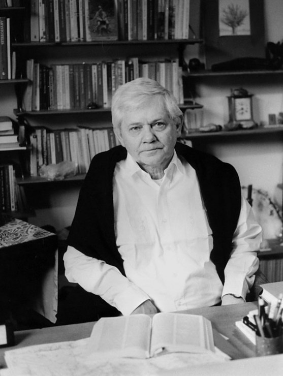
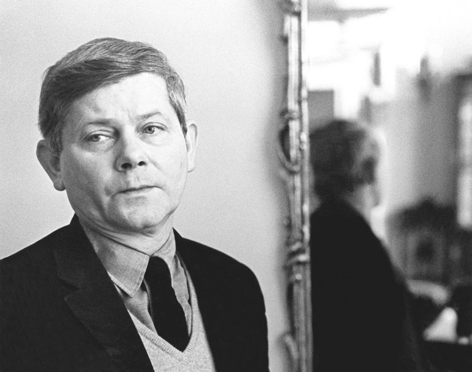
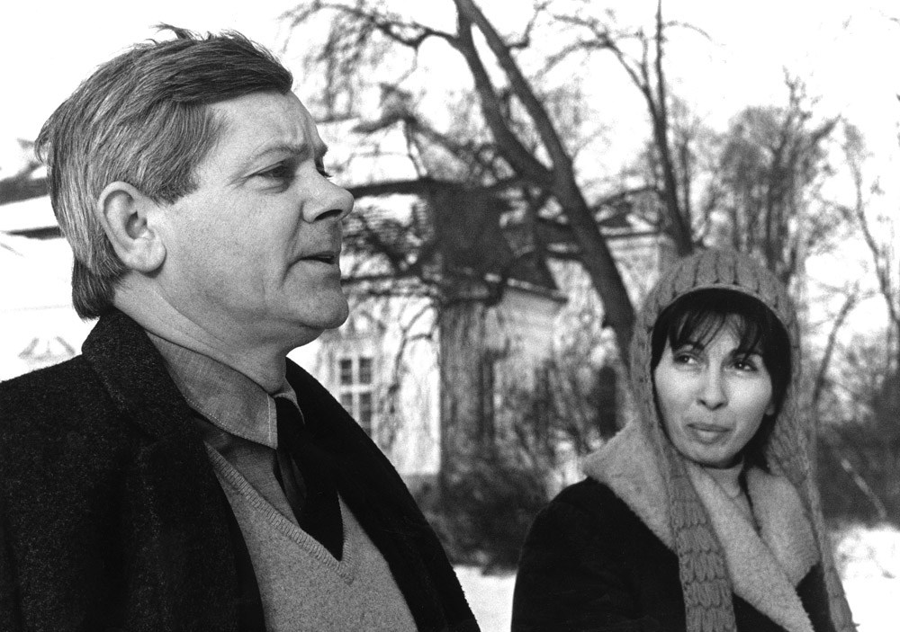
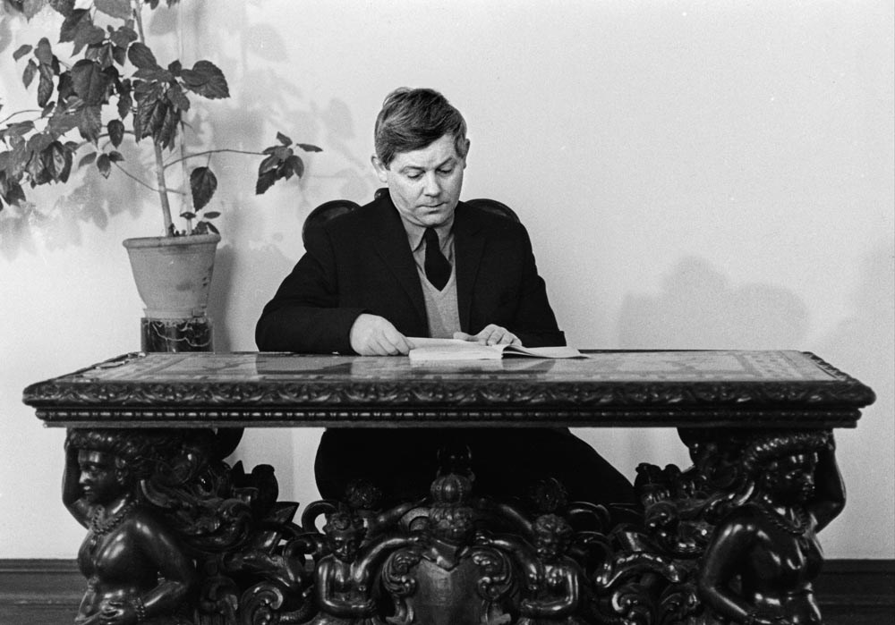
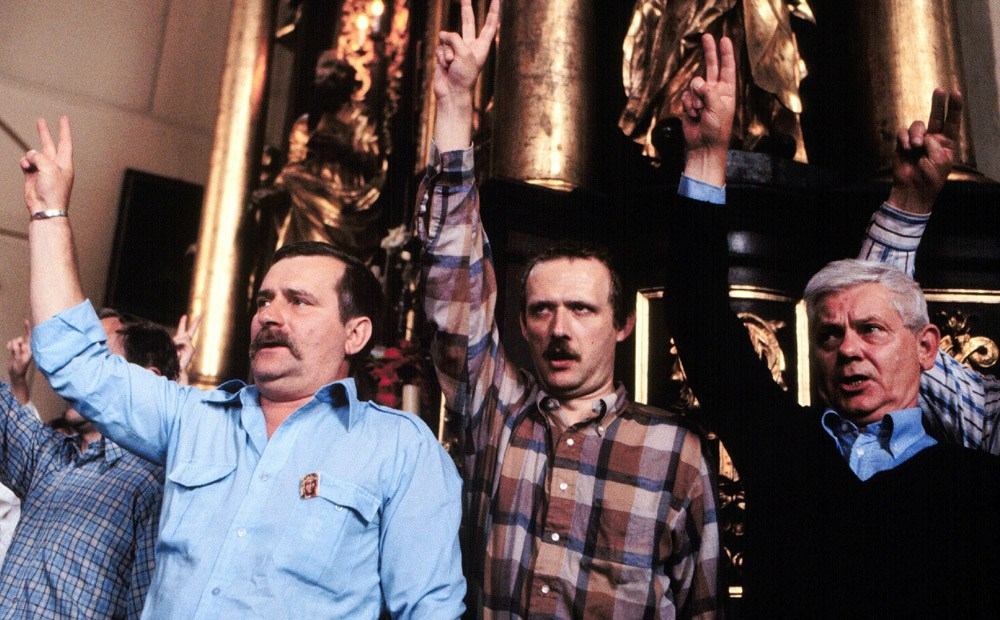

Życie i twórczość Zbigniewa Herberta
Galeria
Wybrane portrety Zbigniewa Herberta - poety i eseisty, autora utworów dramatycznych i słuchowisk, pisarza o wielkim dorobku, wyjątkowym autorytecie artystycznym i moralnym, o biografii tragicznie uwikłanej w historię XX wieku. Urodził się 29 października 1924 we Lwowie, zmarł 28 lipca 1998 w Warszawie.

Zbigniew Herbert w swoim mieszkaniu, fot. Opale / East News

Zbigniew Herbert, Dom pracy twórczej ZLP, 1972, fot. Erazm Ciołek / Forum

Zbigniew Herbert z żoną Katarzyną, Dom pracy twórczej ZLP, 1972, fot. Erazm Ciołek / Forum

Zbigniew Herbert, Dom pracy twórczej ZLP, 1972, fot. Erazm Ciołek / Forum

Lech Wałęsa, Adam Michnik i Zbigniew Herbert, fot. LASKI DIFFUSION / East News